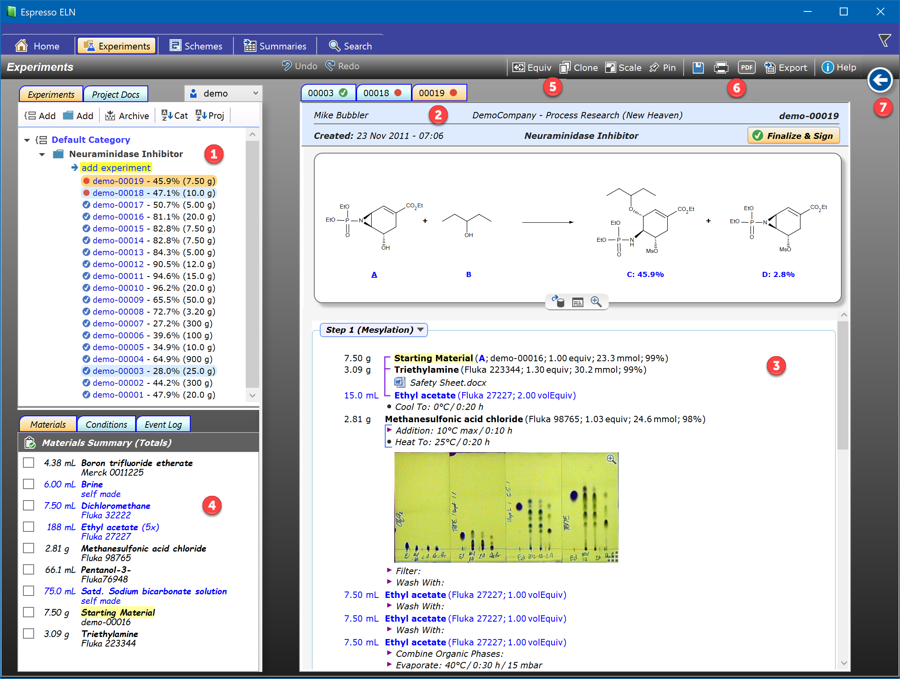
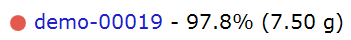
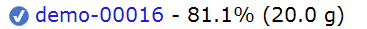
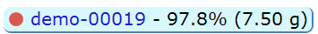
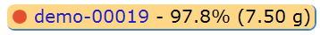
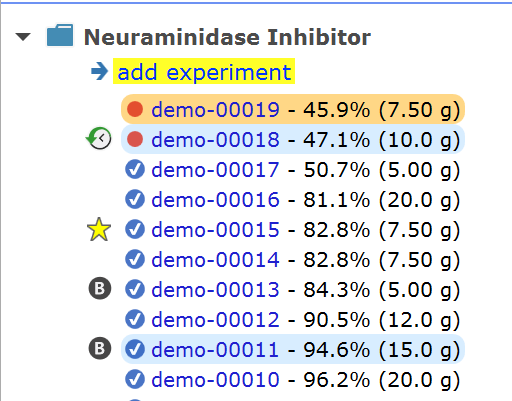
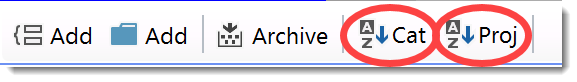
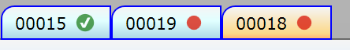
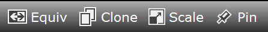
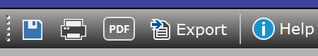

Experiments Section
This is the main section of Espresso ELN, where you create and edit your experiments:

1 - Experiment Tree
Contains a list of all project projects and experiments of your ELN, organized into project categories. If nothing else is specified, the elements are ordered by reverse date, i.e. the most recent ones are always on top. If desired, project categories and/or projects can be sorted alphabetically using the toolbar buttons on top of the experiments tree. By default, they are sorted by descending date. Each project contains a link below its header for adding experiments (see step-by-step tutorial on how to create an experiment from scratch). Context menus are available for the experiment entries (right-click). The experiment entries contain yield and scale information and following conventions apply:
|
 |
A red dot means that the experiment is in progress and not yet finalized. |
|
 |
An ok icon marks the experiment as finalized & signed. |
|
|
A red star means an unlocked experiment in progress, not yet re-signed. |
|
 |
Blue background: The experiment currently is open but not the currently visible one. |
|
 |
Orange background: This is the currently visible experiment. |
Right-clicking an experiment tree entry opens a context menu, which, among other items, contains a section for the assignment of various Tags to experiments (currently Bookmark, Analytics Pending, Favorite). If assigned, such tag symbols appear to the left of the experiment entry in the navigation tree. See the Experiment Tags topic for more details.

The project category and project items of the experiment tree can be sorted independently using the sort toggle buttons in the experiment tree toolbar. If a sort button is checked, the corresponding tree items are sorted alphabetically. Otherwise the most recent item is on top.

In addition to the Experiments tab displaying a list of all experiments, the Project Docs tab to the right of it allows allows embedding and organizing project-level documents.
2 - Experiment Tabs
Espresso ELN is able to keep open as many experiments as desired, accessible via the experiments tabs.

The active experiment tab is marked in orange, while the others are marked in light blue. When browsing through finalized experiments, each new one replaces the previous one in one tab, i.e. no new tab is created for each new experiment. However, when opening a finalized experiment via CTRL-Click, then this experiment is kept open in a separate tab ("pinned"). The same thing can be achieved by clicking the Pin toolbar button (see bullet 4), which keeps a an already opened finalized experiment in a separate tab. Unfinalized experiments are sticky, i.e. they are always placed in a separate tab, be it on application launch or when opening an unfinalized experiment, until they are finalized. This serves as a quick access to your running experiments and as a reminder to finalize them.
3 - Experiment Protocol
See the step-by-step tutorial on how to create an experiment to learn how to work with experiment protocols. Each experiment tab contains an experiment protocol, which can be finalized or unfinalized (in progress). Finalized experiments are locked and read-only, but allow access to their embedded PDF documents, if present, and let the reaction editor open (but not modify) their reaction sketches.
4 - Experiment Details
This area contains three tabs providing processed data of the current experiment:
- Materials: Summarizes all materials used in the experiment. Materials with identical names and catalog-numbers are summed up, providing a shopping list type summary of all materials required for the reaction. For your convenience, each item can be checked to indicate that it was procured and is ready for use.
- Conditions: Whenever a sequence of conditions is specified in a protocol, then a condition graph is auto-generated in this tab for visual feedback. There may be any number of condition graphs present per experiment; moving the mouse over a graph highlights the corresponding condition sequence in the protocol, and vice versa.
- Event Log: Logs workflow events like the creation of an experiment, the finalization date and the unlocking date, including the reason for it.
5 - Protocol Toolbar
This toolbar contains functionality for working with the experiment protocol:

- Equiv: This toggle button switches the amount column of the protocol from weight/volume (lab view) to equivalents (design view) and back. The advantage of the design view is to reveal the design of an experiment without the need of reading a protocol from top to bottom.
- Clone: Allows to copy the current experiment into a new one within a selectable project. This is highly useful when repeating experiments with only slight changes from experiment to experiment.
- Scale: After cloning an experiment or having set up a new one, you might decide to perform it on a larger or smaller scale than the present one. The Scale dialog supports you in this. - Note, that this is NOT the same as changing the starting material amount directly, which will or will not change the amounts of the other components, depeneding if they were specified in equivalents or not.
- Pin: A finalized experiment can be kept open in a separate tab by clicking this button. Unfinalized experiments always are kept open.
6 - General Toolbar
Provides support for saving, printing and exporting an experiment, including general help.

- Save: Saves all currently open and modified experiments. Note that experiments are auto-saved every 10 minutes and also when the application quits - therefore it is not necessary to manually save at regular intervals or before closing the application.
- Print: Prints the experiment.
- PDF: Exports the experiment as a PDF document, which includes all PDF documents embedded into the protocol as attachments, if present.
- Help: Provides access to the application documentation and selected help topics.
7 - Back Button
Clicking this button goes back to the previously active application tab. Repeatedly clicking this button results in switching back and fourth between two tabs.